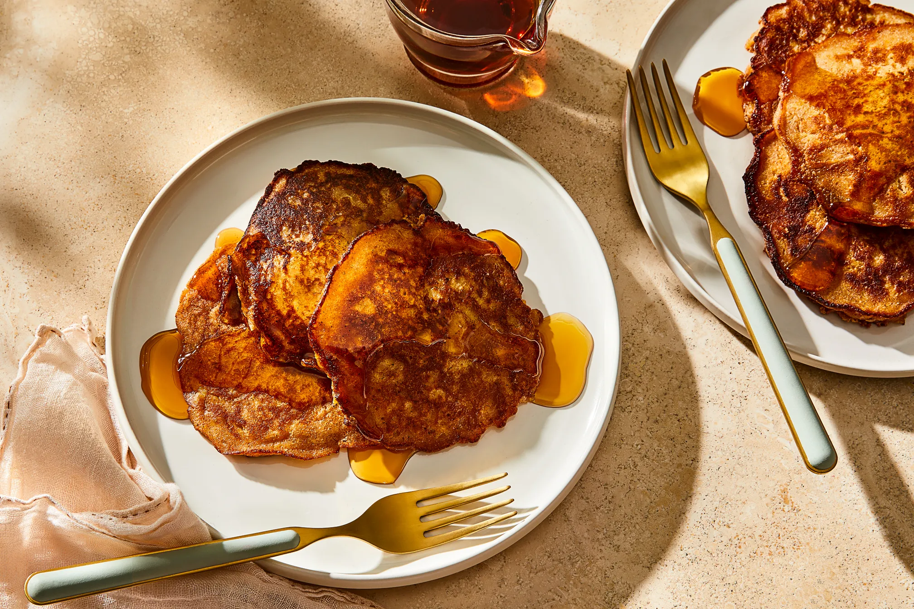

Apple Pancakes

Description
By Joy Cho, from Food52
While I get the appeal of sky-high soufflé pancakes and perfectly circular short stacks laden with sauces and toppings, there’s something compelling about a no-frills pancake. I’ve never been a huge fan of mix-ins like chocolate chips or blueberries—but apples are an exception. The humble, ubiquitous fruit isn’t exactly known for being glamorous, but any baked good it touches, it infuses with a particular warmth and comfort.
This recipe utilizes a mixture of all-purpose and spelt flours, along with ground cinnamon and ginger, to create not-too-sweet, not-too-spiced pancakes, easy enough for any day of the week. Grated apple folded into the batter (along with some freshly squeezed juice) adds flavor and texture. I tested with Gala and Honeycrisp apples, but use whatever variety you have on hand. Although I don’t call for whipping the egg whites separately, if you handle the batter gently (and flip delicately with a large spatula), you’re bound to end up with a stack of soft, earthy apple pancakes, all ready to be doused with dark maple syrup. —Joy Cho
Ingredients
- 3/4 cup all-purpose flour
- 1/2 cup spelt flour
- 1 3/4 teaspoons baking powder
- 1 teaspoon ground cinnamon
- 1/2 teaspoon ground ginger
- 1/4 teaspoon kosher salt
- 3 tablespoons unsalted butter, melted and slightly cooled, plus more for cooking the pancakes
- 2 tablespoons granulated sugar
- 1 large egg, room temperature
- 1 1/3 cups whole milk, room temperature
- 1 teaspoon vanilla extract
- 3 tablespoons freshly squeezed apple juice (reserved from below)
- 1 large apple, peeled, cored, coarsely grated, and squeezed of the juice (about 1 cup grated)
Steps
- In a medium bowl, whisk the flours, baking powder, cinnamon, ginger, and salt. In a separate large bowl, whisk the melted butter, sugar, egg, milk, vanilla, and apple juice until smooth.
- Add the dry ingredients to the wet ingredients and whisk together just until no streaks of flour or large lumps remain (some smaller lumps in the batter are fine, so don’t overmix). Sprinkle the grated apple on top of the batter and gently fold with a rubber spatula just until combined. Let the batter rest for 10 minutes (uncovered is fine).
- When ready to cook, heat a large cast-iron skillet over medium heat and melt a pat (about 1/2 tablespoon) of butter in it. When the pan is hot, scoop the batter by the 1/4 cup onto the skillet and coax the pancake into a roughly circular shape, about a 4” diameter. (You should be able to cook 1 to 2 pancakes at a time depending on the size of your skillet, though I prefer to cook them one at a time for the most control and uniformity.)
- Cook the pancake for 1 1/2 to 2 minutes, until you see small bubbles appearing on the surface and the edges look set enough to flip. Use a large spatula to gently flip the pancake and cook for an additional 1 1/2 to 2 minutes, until the pancake is golden and cooked through. After the first pancake, reduce the heat to medium-low and repeat the cooking process with the remaining batter, melting more butter in the pan before each new batch.
- Transfer the pancakes to a serving platter or individual plates and serve immediately with maple syrup. To rewarm the pancakes, place them on a wire rack set over a baking sheet in a 250°F oven for 10 to 15 minutes, until warmed through.